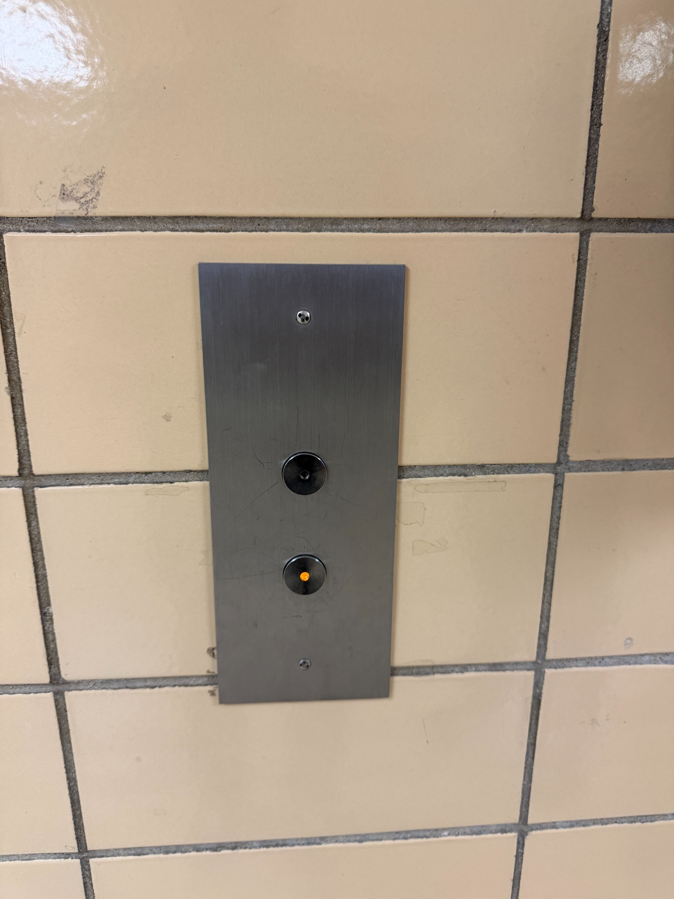
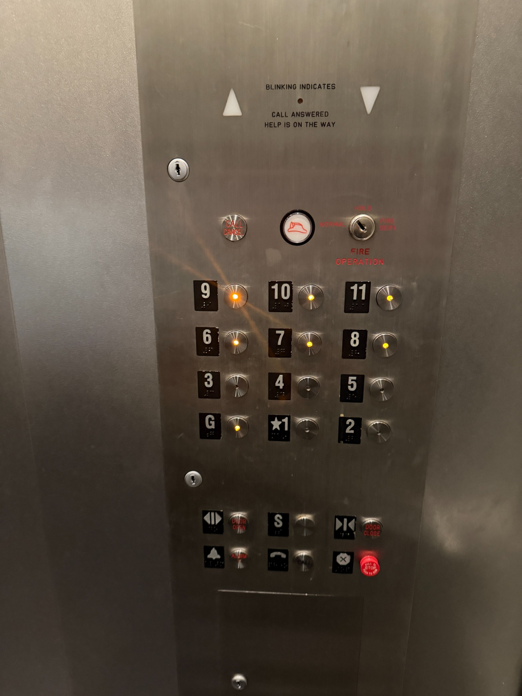
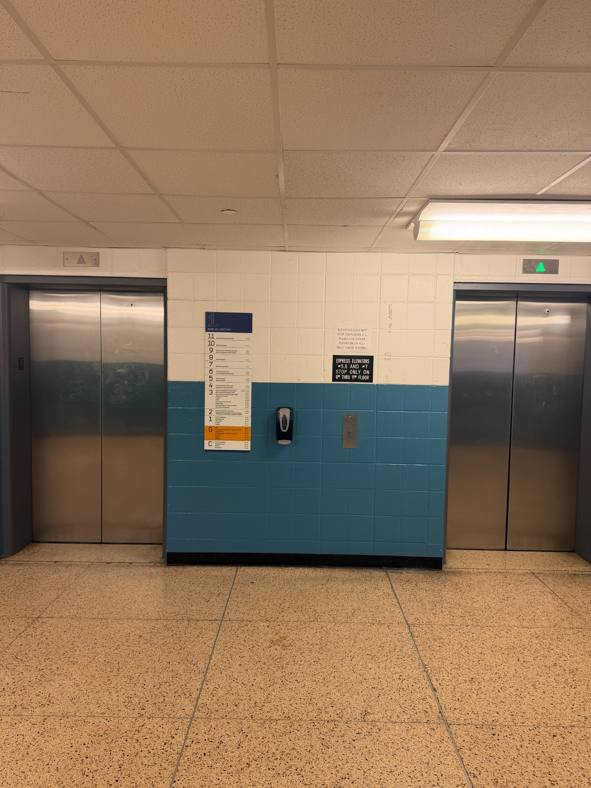

The current system does not know each passenger’s destination until they are already inside the elevator. That creates random grouping, repeated stops, and crowded waiting areas.

The hallway button collects direction, but not the exact floor.

Inside the elevator, many different floor buttons can be selected on one trip.

Students wait without knowing which elevator is best for their destination.
The problem is not only the number of elevators. The bigger problem is how passengers are organized. If students going to similar floors are grouped before boarding, the elevator can travel with fewer stops and less confusion.